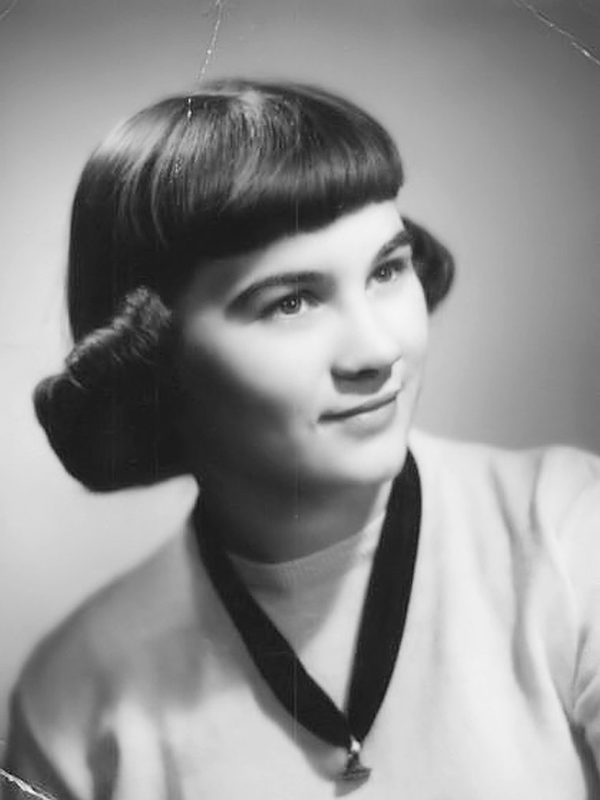
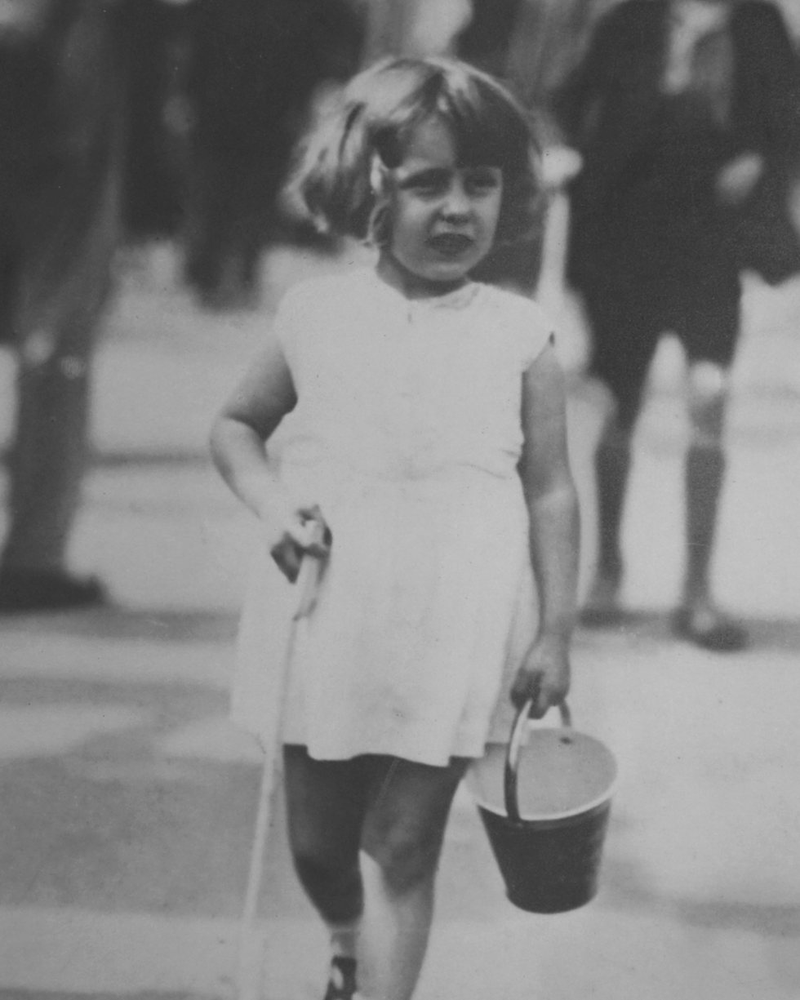

Preserve
Something
Priceless
Professionally produced life story films. A relaxed, guided interview, woven together with family photographs, home video, and the music that mattered, so the people who come after you can still hear your voice.
How will they
remember you?
Not just through photographs, but through your voice, your laughter, and the stories and wisdom that only you can share.

In many ways, it’s like a documentary of your life. Just as a wedding film carefully captures the emotion and significance of a single day, a life story film captures something even greater, your entire journey.
Imagine your grandchildren, or even your great-grandchildren, being able to sit down and hear your stories in your own voice. To see your expressions, your humor, and your perspective on life.
It’s something that no photo album alone can truly preserve.
When stories aren’t shared,
they slowly fade with time.
Capturing them ensures that the memories, lessons, and love you have experienced remain part of your family’s history.

Families often invest in filming special events that capture a single moment in time. A life story film preserves something far more expansive, an entire lifetime of experiences. Over the years, it becomes a family heirloom whose value only continues to grow.